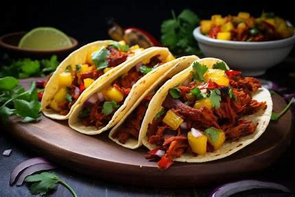

Mexican Menu
¡Disfruta de la receta!
tacos al pastor

Ingredients:
- 1 lb pork shoulder (thinly sliced)
- 3 dried guajillo chiles
- 1/2 cup pineapple juice
- 1 small onion (diced)
- 1/2 pineapple (diced)
- 2 cloves garlic
- 1 tsp oregano
- 1 tsp cumin
- Corn tortillas
- Cilantro and lime (for garnish)
Recipe:
-
Prepare the marinade Rehydrate dried chiles in hot water,
blend with pineapple juice, garlic, oregano, cumin, and salt.
-
Marinate the pork: Add the pork to the marinade and let it
sit for at least 2 hours or overnight.
-
Grill the pork: Cook the pork on a grill or in a pan until
crispy and caramelized.
-
Serve Slice the pork thinly and serve on corn tortillas with
diced onions, pineapple, cilantro, and a squeeze of lime.
Chiles Rellenos

Ingredients:
- 4 large poblano peppers
- 1 cup Oaxaca cheese (or mozzarella)
- 4 eggs (separated)
- 1 cup flour
- 2 tomatoes (blended)
- 1 small onion
- 2 cloves garlic
- Oil (for frying)
Recipe:
-
Roast the peppers: Roast poblano peppers on an open flame
until blackened. Peel, remove seeds, and set aside.
- Prepare the stuffing Fill the peppers with cheese.
-
Make the batter: Beat egg whites until stiff, then fold in
yolks. Coat the peppers in flour and dip in the egg batter.
-
Fry: Heat oil in a pan and fry the peppers until golden
brown.
-
Prepare sauce: Blend tomatoes, onion, and garlic. Simmer in a
pan and serve over the fried peppers.
Enchiladas Verdes

Ingredients:
- 12 corn tortillas
- 2 cups shredded chicken
- 8 tomatillos
- 1 onion
- 2 cloves garlic
- 1 jalapeño
- 1 cup sour cream
- Cilantro (for garnish)
Recipe:
-
Make the green sauce: Roast tomatillos, onion, garlic, and jalapeño.
Blend with salt and a bit of water.
- Prepare the filling: Shred cooked chicken.
-
Assemble enchiladas: Warm the tortillas, dip in the green sauce,
fill with chicken, and roll them up.
-
Bake: Place the enchiladas in a dish, cover with remaining sauce,
and bake at 350°F for 20 minutes.
- Serve: Top with sour cream and cilantro.